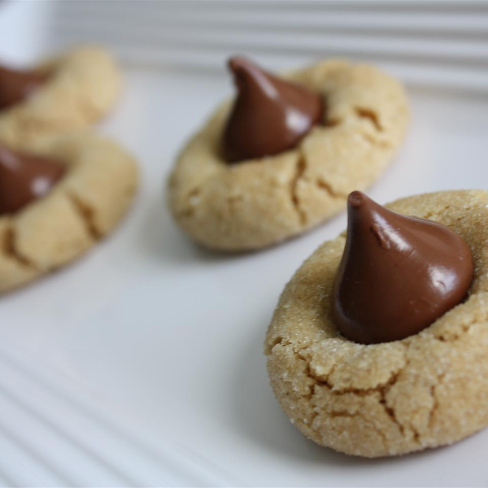

Peanut Blossoms

Description
I make these every year for our annual cookie open house. We make about 15 to 20 different kinds of cookies and have a 4 hour open house with friends. We then prepare cookie trays to take to shut ins and freeze the rest to enjoy all year long. My husband helps with this four day project! He's retired ... and I'm partially retired. It has been a long standing tradition that we enjoy every year!
Ingredients
- 1 c. shortening
- 1 c peanut butter
- 1 c brown sugar, packed
- 1-1/2 c white sugar, divided
- 2 eggs
- 1/4 c milk
- 2tsp vanilla extract
- 3-1/2 c flour
- 2tsp baking sode
- 1 tsp salt
- milk chocolate candy kisses
Steps
- Preheat oven to 375 degrees F (190 degrees C). Grease cookie sheets.
- In a large bowl, cream together the shortening, peanut butter, brown sugar, and 1 cup white sugar until smooth. Beat in the eggs one at a time, and stir in the milk and vanilla. Combine the flour, baking soda, and salt; stir into the peanut butter mixture until well blended. Shape tablespoonfuls of dough into balls, and roll in remaining white sugar. Place cookies 2 inches apart on the prepared cookie sheets.
- Bake for 10 to12 minutes in the preheated oven. Remove from oven, and immediately press a chocolate kiss into each cookie. Allow to cool completely; the kiss will harden as it cools.